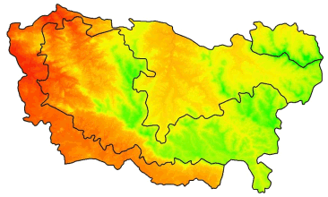

Raster Data Pt 2: Common Raster Manipulations

A number of functions are available to view the properties of a raster object. Most of these are read-only.
| Property | Function(s) |
|---|---|
| image dimensions | nrow(), ncol(), ncell(), dim() |
| resolution (pixel size) | res() |
| number of layers | nlayers(), nbands() |
| layer names | names() |
| coordinate reference system | proj4string(), projection() |
| extent | extent() |
| in memory or not | inMemory() |
| source file | filename() |
| has values | hasValues() |
| cell values data type | dataType() |
| has a raster attribute table | is.factor() |
Try some of the above functions on the DEM you imported previously.
Common raster manipulations include:
| Task | Function(s) |
|---|---|
| visualize | image(), plot() |
| (re)project | projectRaster() |
| crop | crop() |
| mask | mask() |
| resample (i.e., change the pixel size) | aggregate(), resample() |
| adjust pixel values (stretch, reclassify, etc.) | getValues(), rst[], setValues() |
| stack | stack() |
| mosaic | mosaic() |
| vector –> raster | rasterize() |
| export to disk | writeRaster(), writeGDAL() |
In future a section, we’ll look at some raster analytical functions such as:
| Task | Function(s) |
|---|---|
| descriptive cell statistics | cellStats() |
| binary mask | myrast[] |
| raster algebra (local operations) | * + - / |
| focal (neighborhood) operations | focal() |
| zonal stats | zonal() |
| distance surface | distance() |
| spatial join (enrichment) | extract() |
| spatial interpolation | |
| classify pixels | |
| time series analysis |
Like sf objects, projection info in rasters is saved. You can view (or assign) a CRS to a raster object using proj4string().
Projecting rasters on the other hand is a little more complicated than vector features because of the additional spatial structure implicit in the grid. If you blindly apply a projection equation to cell coordinates, you’ll very likely wind up with non-square cells. That’s a problem if your goal is to combine the projected raster with other rastesrs for analysis or visualization, because the cells may not align properly.
To help with this, the projectRaster() function has some additional arguments:
projectRaster(from, to, res, crs, method, alignOnly=FALSE, filename="")
If you’re trying to project a raster to match another one, you can simply enter the existing one as the to argument and R will match the cell size and extent. You can also manually specify the resolution with res.
method - determines how the projected cell values will be computed. Very important to pay attention:
categorical rasters - pixel values are merely integrates that correspond to a category, let method=‘ngb’ (nearest neighbor) so the output cell values remain integers.
continous rasters - use bilinear to interpolate new values.
Let’s project the Yosemite DEM to UTM.
yose_dem_ll
yose_dem_utm <- projectRaster(yose_dem_ll, to=sfpen_elev, method="ngb")
plot(sfpen_elev, legend=FALSE)
plotRGB(sfpen_1869_utm, add=TRUE, alpha=128)The extent of a Raster is simply the rectangular area it reflects, like a bounding box. Extent objects can saved on their own and used for cropping, creating new raster objects, etc. You can increase an Extent object on all sides using raster::extend(), and even project it with raster::projectExtent(). The former offers an easy way to enlarge the area is cropped to have a little buffer on all sides.
Masking is similar to cropping, but rather than chopping off rows and columns, pixels that fall outside the study area are simply set to NA. This allows you to perform raster analyses for irregular areas, because most statistical functions ignore NA values, and R will generally make NA pixels transparent when plotting.
To mask a raster, use raster::mask(rst, mask) where rst is your raster and mask is an another Raster or Spatial object (e.g., polygon).
Mask the San Francisco DEM to the city limits.
RasterStack and RasterBrick objects store multi-layer rasters. When you import a multi-layer raster from disk using the raster::brick() function, you get a RasterBrick object. However sometimes your source data come from different files. In this case, feed the filenames into the raster::stack() function.
Example: Importing Multiple TIF Files into RasterStack
## Find tif files (should all be in the same CRS)
data_dir <- "../docs/data"
tiffs <- list.files(path=data_dir, pattern="^m(.*)tif$")
tiffs
## Add the path
tiffs_fn <- file.path(data_dir, tiffs)
head(tiffs_fn)
file.exists(tiffs_fn)
## Import the files as a stack
big_stack <- raster::stack(tiffs_fn)
big_stack
## Plot layers one by one
plot(big_stack, legend=FALSE)If you want to plot a multi-layered raster as a RGB image, use plotRGB() and use the r, g, and b arguments to indicate which layers to use as red, green and blue.
Most functions like cropping and masking will work on all layers combined.
You can grab a single layer the same way you would a list, such as big_stack[[1]] or big_stack$layer_name. To pull out multiple layers, use raster::subset().
Add and delete layers with raster::addLayer() and raster::dropLayer().
Import the mission_tempXX.tif files in the data folder as a RasterStack.
See also: Remote Sensing Image Analysis by Robert Hijmans
You may want to change the pixel size to reduce the amount of data and therefore computation time required. Another common case is where you need to match the resolution of two rasters so you can do pixel-by-pixel computations.
The raster package has two functions to change pixel size:
aggregate(x, fact=2, fun=mean, …)
resample(x, y, method=“bilinear”, …)
Use aggregate() when you want to increase pixel size by a numeric factor, for example by 2 (twice as big). The fun agrument allows you to specify the function uses to summarize values (e.g., take the mean). resample() will match the pixel size of another raster. Remeber with discrete or categorical data, use method=‘ngb’ so the cell values in the output will remain integers.
Let’s reduce the resolution of the DEM by a factor of 15. Note the discernably larger pixel sizes.
A slope surface is a raster whose cell values represent the slope of the terrain, while an aspect raster records the direction of the compass is uphill. Both of these can be created from a DEM with the raster package’s terrain() function.
You can feed slope and aspect rasters into the hillShade() function to generate a raster the simulates shading.
sfpen_slope <- terrain(sfpen_elev, opt="slope")
sfpen_aspect <- terrain(sfpen_elev, opt="aspect")
sfpen_hillshade <- hillShade(sfpen_slope, sfpen_aspect, 40,270)
plot(sfpen_hillshade, col=grey(0:100/100), legend=FALSE)Create a hillshade for San Francisco.
What do the two numeric arguments in the hillShade() function do?
Occassionally you have to convert vector features to a raster format for an analysis. Points, lines and polygons can all be converted to raster with the rasterize() function. Details you have to think about are what cell size to use, what the values of the cells should be, and what to do when two vector features overlap or fall in the same cell.
rasterize(sp_object, rast, field, fun=‘last’, background=NA, mask=FALSE)
Typically, you use another raster (i.e., the one you’re trying to match) as the ‘template’ for the rasterized features, passed as rast (must have the same CRS). The field argument has a number of options for the cell output values, including a constant value, or the name of a column in the vector attribute table.
Rasterize the SF neighborhoods, using the DEM as the raster template.
First load the neighborhood boundaries, and project them to match the raster.
library(rgdal)
sfnb_ll <- readOGR("../docs/data", "sf_neighborhoods")
sfnb_prj <- spTransform(sfnb_ll, proj4string(sfcity_msk_dem))
plot(sfnb_prj, col=topo.colors(nrow(sfnb_prj)), axes=TRUE)Next, we rasterize.
We just created a categorical raster where the cell values are integers that refer to a category. We can see the frequency of cell values as a matrix with freq().
To save the category labels as part of our raster, we need to give it a “Raster Attribute Table” (RAT). The ratify() function will return a categorical (factor) raster with a bare bones RAT that we can then add columns to.
We can grab the RAT with levels(). Note that the RAT is simply a data frame, but levels() returns a list of data frames (one for each layer).
We can add columns to the RAT data frame the same way add columns to any data frame. Let’s add the neighborhood names to the RAT, which can get from the attribute table of the vector layer.
To plot the raster with the neighborhood names in the legend, we have to turn to the rasterVis package which has the levelplot() function. We also need to come up with a large number of random colors.
Other common manipulations of raster data leave the spatial structure intact, but modify the cell values. For example you may want to ‘clip’ the values so that all values below a certain threshhold are changed to ‘0’. Another example would be a linear stretch for better visualization.
We’ve already seen you can visualize the distribution of cell values with the hist() function.
There are couple of ways to get cell values so you can analyze them or feed them into a statistical model.
getValues() - returns a copy of all pixel values as a vector (useful for global operations)
getValuesBlock() - returns a copy of a rectangular block of cell values
To both read and write (edit) cell values, you can use square brackets. Like data frames, you can add an expression for the rows and columns to work with.
myrast[], myrast[rows, cols]
By default, the myrast[] notation will return cell values as a numeric vector. If you want to return select columns and rows as a Raster object, add drop=FALSE.
Another function you can use to change cell values is setValues(). Note however that setValues() requires you to pass a numeric vector for all cells, whereas square bracket notation (e.g, myrast[expr]) allow you to assign new values to only those cells that meet a condition in expr.
In the following example, we identify pixel values that are below a threshhold, and then set them to 0.
dem_copy <- sfcity_msk_dem
dem_vals <- getValues(dem_copy)
small_vals <- (dem_vals < 50) ## Create a Boolean vector
table(small_vals)
dem_copy[small_vals] <- 0Compare results
par(mfrow=c(1,2))
x <- hist(sfcity_msk_dem, col="grey50", main="\nOriginal")
hist(dem_copy, col="grey50", breaks=x$breaks, main="\nSmall Vals Zeroed")Create a copy of the DEM where all small values are i) turned to zero, ii) changed to NA.
How many cells got zeroed out? How much area do they represent?
Functions that return a copy of a raster with modified cell values are calc() and reclassify().
The example above could be created with
zero_if_small <- function(x) { x[x<50] <- 0; return(x) }
dem_zeroed <- calc(sfcity_msk_dem, zero_if_small)Reclassifying changes groups of cell values to other values all at once. For example, you could change all cell values between 1 and 10 to become 1, all values between 11 and 15 become 2, etc.
The reclassify() function makes this easy by allowing you to pass a 3-column matrix with columns for the lower bound, upper bound, and new value for each group.
Step 1. Create the reclassification matrix. The first and second columns should define the range of input values, and the third column should be the new value in the output. Rows should be mutually exclusive.
Step 2. Apply the reclassifcation matrix. If you need to fine-tune whether the lower and upper bounds are open or closed, see the help page.
sfcity_dem_recls <- raster::reclassify(sfcity_msk_dem, rcl_mat)
sfcity_dem_recls
freq(sfcity_dem_recls)View results.
Use reclassify() to identify areas in San Francisco at risk of flooding from sea level rise.
Remotely sensed raster data often have pixels around the edges that are ‘missing’ values because the sensor didn’t record that area. Other times, an analyst may chose to manually ‘erase’ pixel values outside a non-rectangular study areas so those pixels are omitted from analyses.
There are a variety of conventions for flagging ‘missing’ data depending on the file format. Sometimes they are simply recorded as ‘0’, but that doesn’t always work because 0 can also mean no reflectance. Other common values for NoData are -9999 or -3.4e+38 for floating point rasters. R uses NA to signify missing data, which most statistical functions ignore and most plotting functions make transparent.
TIF files can have a tag in the header which records the value used for ‘NoData’. You can see this with the GDALinfo() function.
rgdal::GDALinfo("../docs/data/sf_elev_utm10n.tif")The raster package has its own export function, writeRaster(), that can export a raster to a number of common file formats including GeoTIFF, ENVI, IDRISI, netCDF, ERDAS, and others. You can of course also export using writeGDAL() from the rgdal package.
Save the San Francisco neighborhoods raster in netCDF format:
Today we saw how to:
Additional Resources